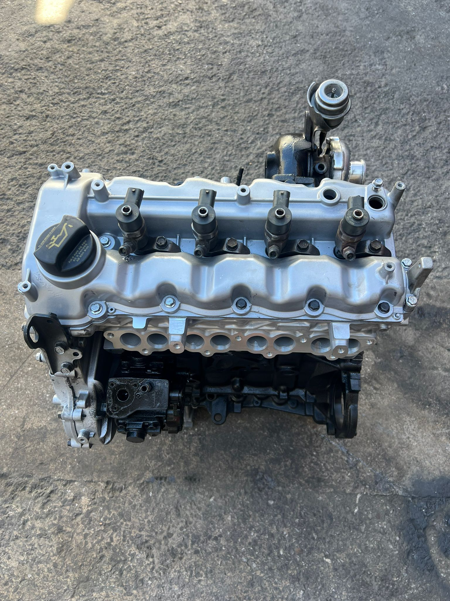

accent blue dizel motor rektifiyeli sıfırlanmış
hyundai accent blue araçlarınız için özel olarak toplanmış dizel motor ünitesi. silindir yüzeyleri, pistonlar, segmanlar ve krank mili hassas ölçümlerden geçirilerek sıfırlanmış duruma getirilmiştir. yakıt verimliliği ve performans testleri yapılmış olup, uzun ömürlü kullanım sunar. ostim merkezimizden hemen teslim.